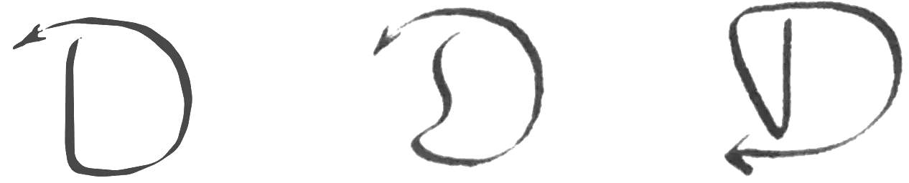
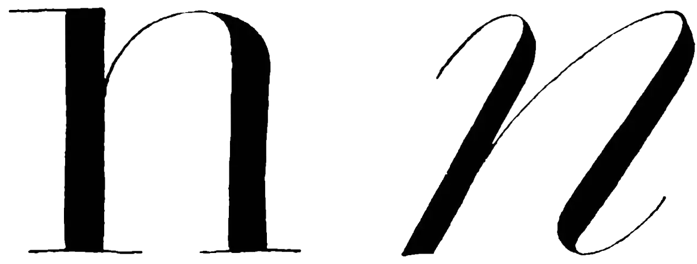
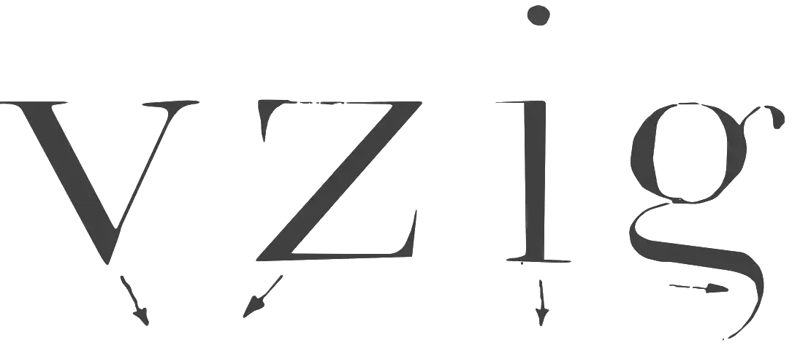
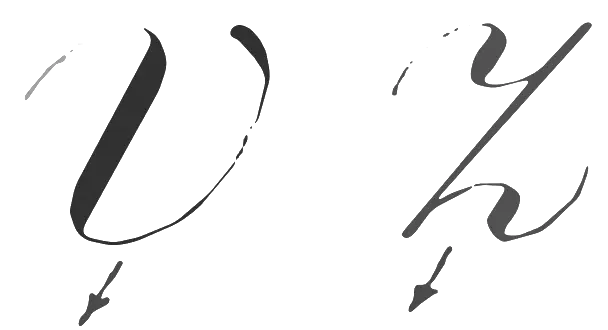
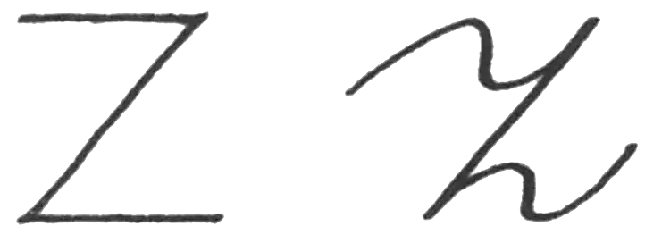
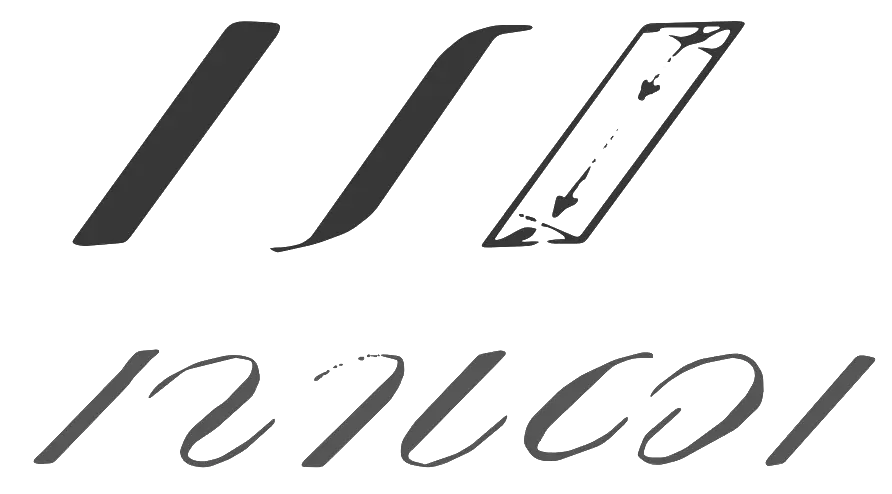

What distinguishes a Burgundian nobleman from a humanist? In The waning of the middle ages Johan Huizinga answers: 'Charles the Bold still read his classics in translation. 'Presumably this answer says more about the difference between a nobleman and a scholar than about the suggested difference between the middle ages and the renaissance. Huizinga himself cannot identify clearly the difference between Burgundian and Italian authors. The differences in accent he points to are substantially more modest than the differences in national character that exist, or so we are led to believe, on either side of the Alps. At the end of the fifteenth century something is in the air, but it does not materialize. Huizinga wishes to illustrate the lucid simplicity oftherenaissance, but finds, precisely in the imitation ofthe Italians, only 'extreme swollenness' and an even more mannered bombast than in his flamboyant middle ages. Huizinga waits for the springtime of the renaissance after his waning, but he waits too long. When his middle ages have passed the renaissance is finished as well.The new phenomena that bewilder him are not the incomprehensible signs of a sluggishly approaching renaissance, but typical expressions of mannerism. Huizinga knew what he could not let himself believe: the middle ages are the renaissance. One ought not to believe such a thing, but Huizinga has no option but to affirm that the ideal of the French culture of chivalry is the ideal ofthe renaissance.And when he has described his quintessential mediaeval figure, Charles the Bold, his conclusion comes as a confession: 'This self-conscious savoir-vivre is actually, in spite of the stiff and naive forms, completely renaissance. It is [...] the most characteristic property of Burckhart's renaissance man.' Yet, on the last page of the book, after all of this is gone for good, Huizinga is still waiting for the fresh full wind that will purify the air. It is good that he stops there, because, when mannerism has run its course, all that remains is a bourgeois self-sufficiency ofwhich only the name is fresh, the enlightenment.
The apostles of the enlightenment had uncovered the true shape of antiquity lost from sight in the 'dark ages'. Across this mediaeval side-path they laid a new road to the sources of civilization. Figure 7.1 shows (left to right) the classical, a mediaeval and the classicistic form of the capital D. The classicistic D appears to have rediscovered the purity of the classical form, which had got lost in mediaeval tomfoolery. Figure 7.2 is a schematic of the strokes with which the letters of figure 7.1 are made. Now a new picture emerges: in mediaeval culture the classical principle is preserved unscathed, and it is classicism that has departed from the classical foundation in order to orient itself toward a chimera, a utopia of its own making, put forward as the true antiquity. This makes sense to anyone who does not look closely. Official culture, distancing itself from authentic culture, is based upon this trick of the eye. This masquerade of wanting desperately to clothe oneself in a culture other than our own is, taken by itself, an innocent hobby, but the extent of it makes the sport dangerous: talent is tracked down and transplanted into a pseudoculture, to the point where the chasm between society and so-called 'cultural life' has become the mightiest institution of western civilization.
It all begins with the stately splendour of the swelling counterpoint. The frontline is still sufficiently clear in the expanded portion of the stroke, but the contrast relies on its contraposition with a thin stroke in which the frontline spins about on an imploded counterpoint. When even contrast is renounced as superfluous ornament, writing is altogether without orientation. Now the barbarians can have their say with their plans to improve the alphabet so it will be easier for children, computers and other illiterates. Whatever they say is completely true in advance because the criterion is annihilated: a line can be drawn in any direction through a point,just as an echo chamber confirms any piece of nonsense.
Expansion is only possible in the portion of the stroke that lies on a path at right angles to the axis of the pen. The thickenings are all parallel as long as the orientation of the pen is fixed. In every other area, the stroke is thin. Where the stroke is thin, the distinction between upstroke and downstroke loses its meaning. The difference between roman and cursive rests only on an interpretation of the tradition (figure 7.3). The stroke of the broad-nibbed pen is the only norm for the pointed flexible pen. This applies even more for the ballpoint pen.
  The traditional difference that the forms of some letters display in roman and cursive is also taken over in expansion (figure 7.4). The roman requires changes in the orientation of the pen. In the cursive they can be avoided by an adaptation of the letterform (figure 7.5). It is completely meaningless to perpetuate such opportunistic solutions in writing that has no swelling strokes. The curlicues in the z are only there on account of contrast. When there is no contrast, there is no need ofcurlicues (figure 7.6).
Astraight oblique stroke ought to be closed offhorizontally. The stroke is a parallelogram. In principle, the stroke begins and ends with a filament whose curve has been resolved into a nick (figure 7.7).
The technique of the pointed flexible pen is difficult, because irregularities in the contrast and the direction of the strokes are almost unavoidable, while such irregularities are very obtrusive because of the strict orientation of such strokes. The most important reason to do writing exercises in expansion comes from typography. After John Baskerville applied expansion in his letters for printing, midway through the eighteenth century, it remained the one and only point of departure for the contrast of letters for printing until into the twentieth century.William Morris and his kindred spirits are an exception. Even the nineteenth-century sanserifs that are currently modern are derived, by contrast reduction, from expansion.
To conclude this chapter, a note about mannerism. I cannot point as self-evidently to mannerism as I can to antiquity or the middle ages, because not all works ofcultural history give mannerism a place of its own. In fact, I have never yet come across mention of mannerism in histories of writing. What I understand by it is mostly regarded as the decline of the renaissance. But I cannot make do without mannerism, because in my theory it embodies the great turning point of western civilization. So I will indicate briefly what I understand by mannerism.
Around 1500 the classical world picture suffers a disturbance on all fronts: astronomical (Copernicus), geographical (Columbus), political (the Turks), and theological (Luther). All the existing cultural forces react to this shattering with attempts to create a new world picture. This can be called artificial, and with reason, but there is no reason to condescendingly depreciate this cultural reorientation as 'rhetoric'. A small sample of mannerist creations should suffice to dispense such a prejudice: Saint Peter's, the Wilhelmus, modern astronomy, analytical geometry, mechanics, the music of the English virginalists, the poetry of William Shakespeare and John Donne, every important calligraphic 'writing book', every important copper gravure, the Statenbijbel, In praise of folly, and the Dutch state.
Mannerism does not allow itself to be slipped in between renaissance and baroque as a transition period. My haphazard collection of examples stands against the background of the middle ages. What is common to all mannerist expressions resists a splitting up of their backdrop. In relation to mannerism, the renaissance is just a regional mediaeval phenomenon - the Tuscan counterpart of the Burgundian gothic.
Mannerism is considered anti-classical. The creation of a new heaven and a new earth is indeed something different from the classical certainty that everything has its proper place. From a mannerist perspective the middle ages are just as classical as antiquity.